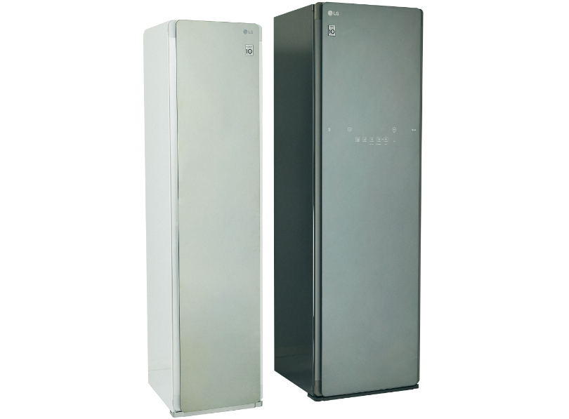
Composition & Text: Takako Nagai [CATAL DESIGN]
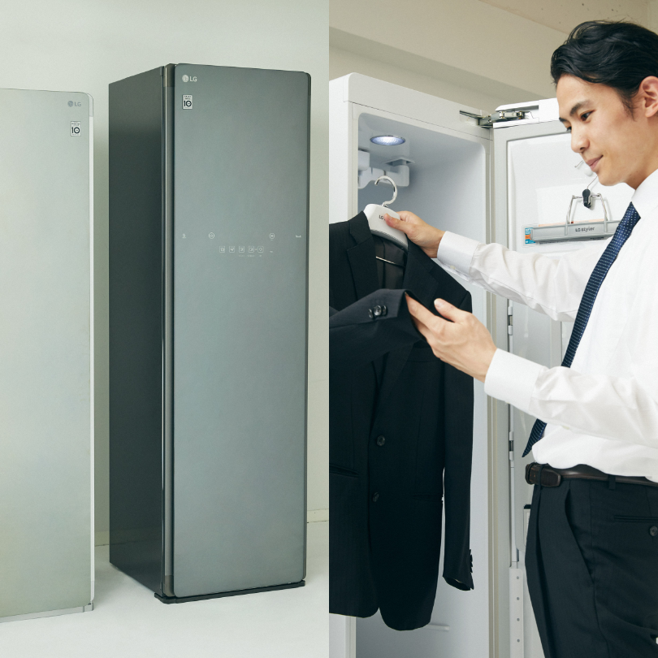
2022.07.27
ハンガーにかけてセットするだけでスチームの力によるシワ伸ばし効果、消臭効果、除菌効果が期待でき、そしてふっくらとした仕上がりになるというLG Styler。今回は「シワ伸ばし効果」「ふっくら仕上げ効果」「衣類の消臭効果」の3つにフォーカスを当て、実際に LG Stylerを使用してその実力を検証しました。
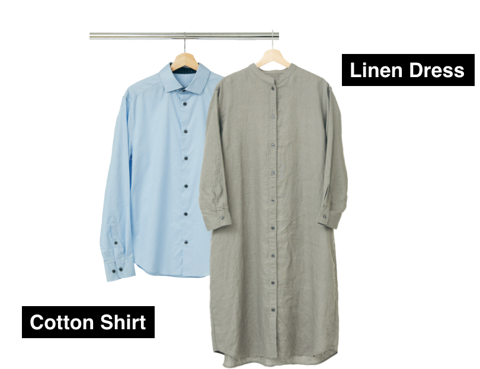
Cotton Shirt
・コットン素材の特徴
ほどよい光沢感があり柔らかく、吸湿性、通気性、保温性に優れています。天然素材なので肌に優しいというのも嬉しいポイント。
ただ、シワになりやすく、洗濯で縮みやすいのが欠点です。
ほどよい光沢感があり柔らかく、吸湿性、通気性、保温性に優れています。天然素材なので肌に優しいというのも嬉しいポイント。
ただ、シワになりやすく、洗濯で縮みやすいのが欠点です。
Linen Dress
・リネン素材の特徴
サラッとした肌触りと優しいナチュラルな風合いが特徴です。また、生地の目が粗いため通気性が高く、涼しく蒸れにくいため暑い夏にうってつけの素材と言えます。
ただ、リネンはコットン以上にシワになりやすく、洗濯機で回すと縮んでしまってお手入れが面倒という一面も。
サラッとした肌触りと優しいナチュラルな風合いが特徴です。また、生地の目が粗いため通気性が高く、涼しく蒸れにくいため暑い夏にうってつけの素材と言えます。
ただ、リネンはコットン以上にシワになりやすく、洗濯機で回すと縮んでしまってお手入れが面倒という一面も。
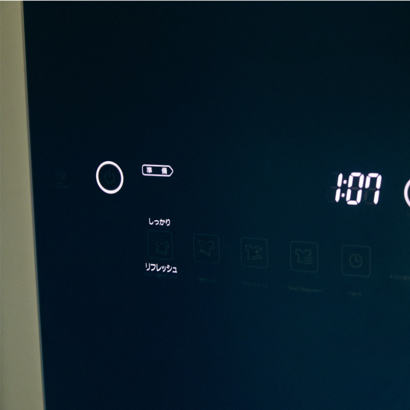
コースは「リフレッシュ」「専用ケア」「除菌／衛生」「乾燥」の4つから服の素材や用途に合わせて選択します。
今回の検証ではスチームと振動によってしわを伸ばしニオイをとる「リフレッシュ」コースの「しっかり」（67分間）設定にしました。
今回の検証ではスチームと振動によってしわを伸ばしニオイをとる「リフレッシュ」コースの「しっかり」（67分間）設定にしました。

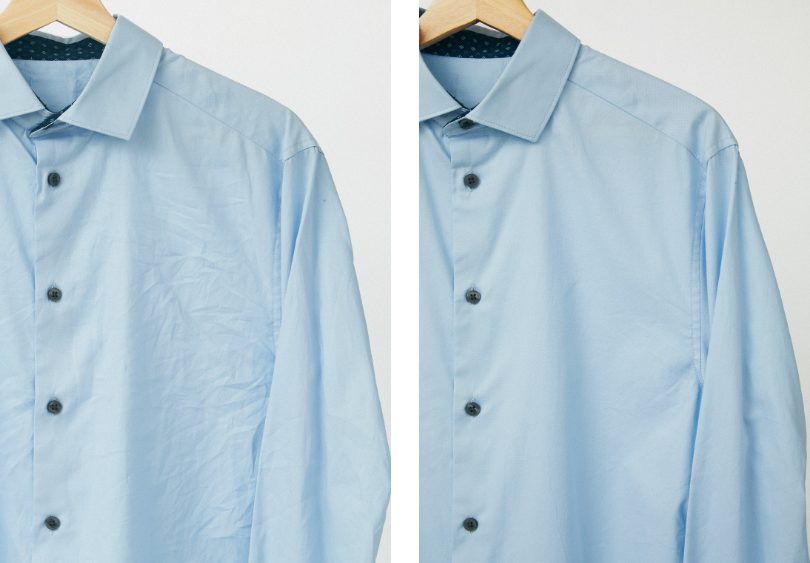
Before／Afterを比べてみるとその差は一目瞭然です。 細かいシワやヘタレが気にならなくなり、 LG Stylerから取り出してすぐに着用できる状態になりました。
After Linen Dress">
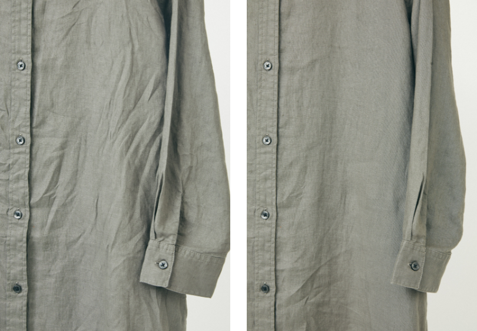
リネン生地でも、LG Stylerのシワ伸ばし効果はその実力を発揮！頑固な縦ジワは目立たなくなり、リネン生地本来のナチュラルな風合いが楽しめるようになりました。

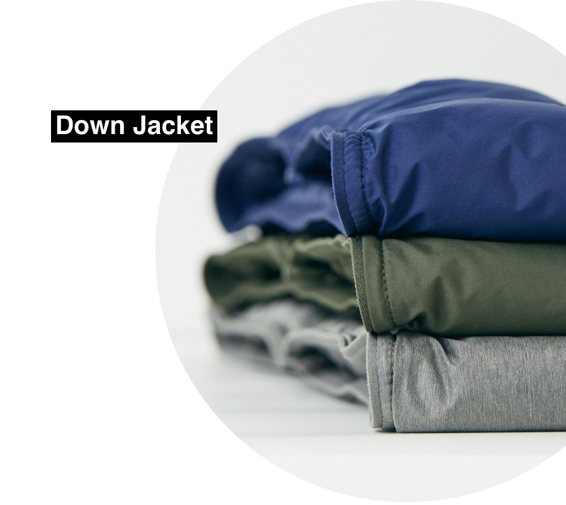
夏の間クローゼットに仕舞っておいたダウンジャケットを引っ張り出すと、ヘタレてぺちゃんこになってしまった・・・という経験がある方も多いのではないでしょうか。そんなダウンも、LG Stylerに入れてケアしてみましょう。
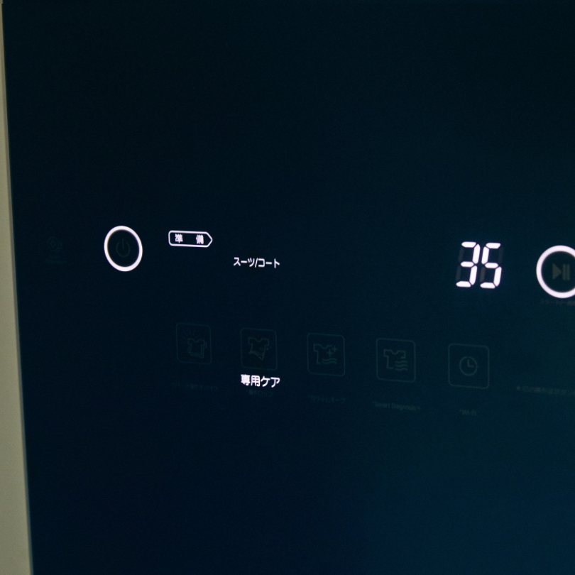
設定は、「専用ケア」コースの「スーツ/コート」を選択。
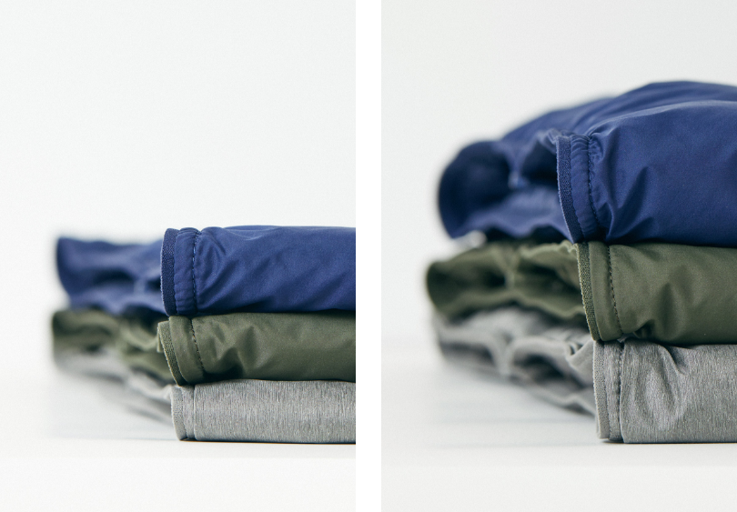
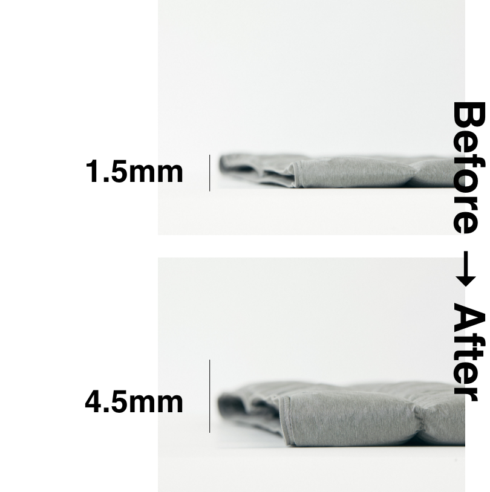
潰れてしまっていたダウンが、まるでおろしたてのようなふわふわの手触りに復活！幅を計測してみると、最初は約1.5mmだった厚さが4.5mmになりました。
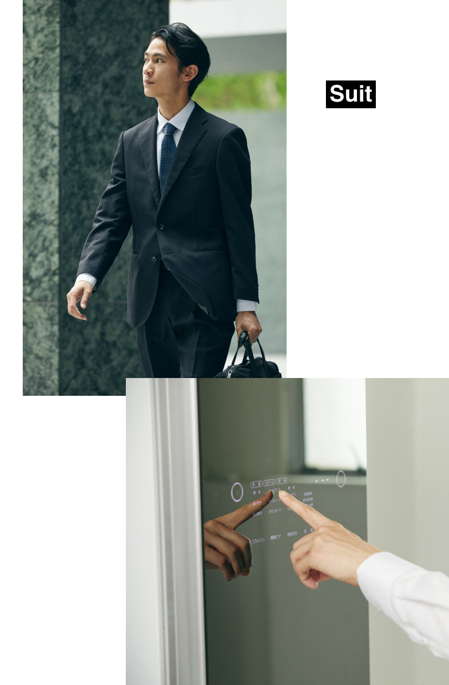
艶と光沢感が特徴のウール100%のスーツ。仕事で日々着用していると、さまざまなニオイが付着してしまいます。例えば飲み会の時の焼肉のニオイや、タバコ臭など…。ウールのスーツは摩擦に弱く洗濯機で回すことができないため、自宅でのケアは非常に困難。これまでクリーニングに出すしか選択肢はありませんでした。
しかしLG Stylerなら、そんなデリケートなスーツだって簡単にケアすることが可能です。 今回はタバコのニオイを付着させたスーツで LG Stylerの消臭効果を検証します。 まずタバコの煙が充満した密閉袋の中にスーツを入れ約2時間放置。スーツにタバコの嫌なニオイがしっかりと付着しました。 LG Stylerでケアすることで、果たしてどの程度ニオイが軽減されるのでしょうか？
しかしLG Stylerなら、そんなデリケートなスーツだって簡単にケアすることが可能です。 今回はタバコのニオイを付着させたスーツで LG Stylerの消臭効果を検証します。 まずタバコの煙が充満した密閉袋の中にスーツを入れ約2時間放置。スーツにタバコの嫌なニオイがしっかりと付着しました。 LG Stylerでケアすることで、果たしてどの程度ニオイが軽減されるのでしょうか？
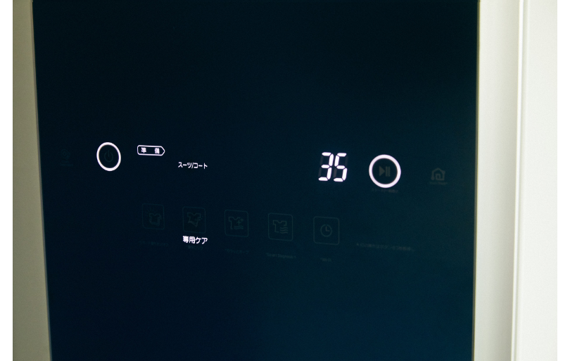
設定は、スーツやコートのニオイを取り除くのに最適な「専用ケア」コースの「スーツ／コート」を選択。
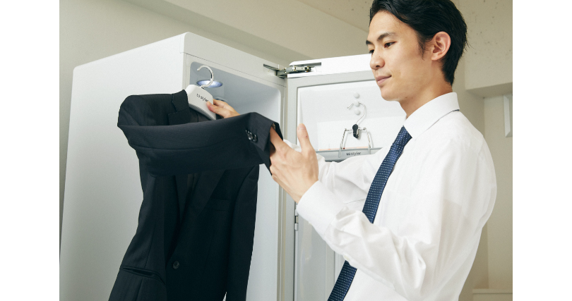
たった30分弱入れておくだけで、クリーニングに出した後のようなふんわりとした仕上がりに。果たしてニオイは取れているのでしょうか・・・？
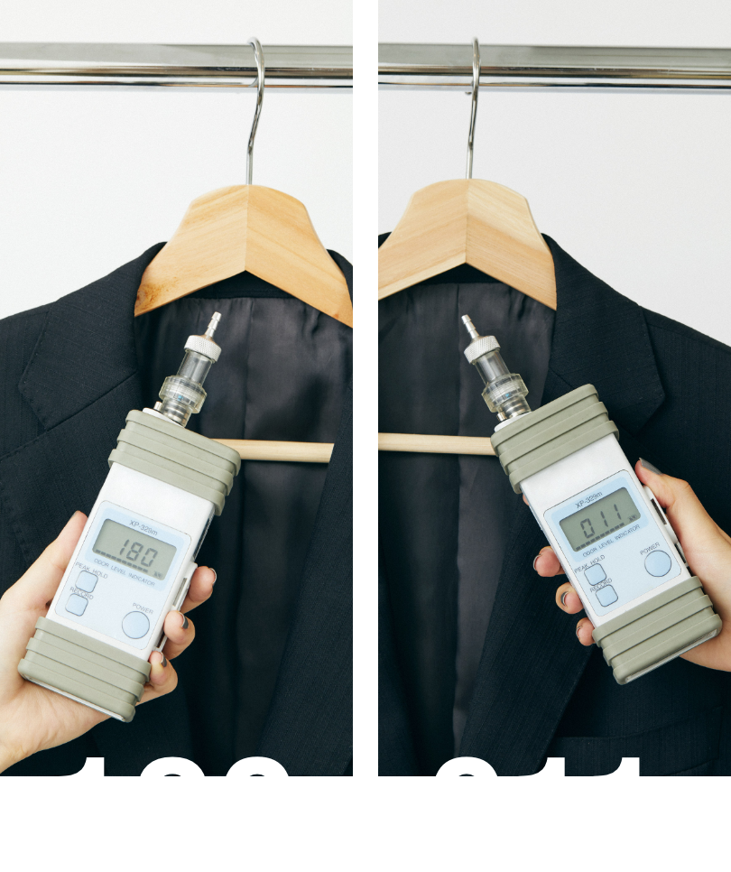
臭気計で首元のニオイを計測してみたところ、最初は180近かった数値が LG Stylerでのケア後はなんと10程度に減少。数値だけでみるとニオイが約18分の1になりました。
実際にニオイを嗅いでみたところ、やや刺激臭は感じるもののタバコ独特の嫌なニオイは感じません。帰宅後にこのケアを続けることで、クリーニングに出す回数も減らせて毎日気持ちよくスーツを着用することができます。
実際にニオイを嗅いでみたところ、やや刺激臭は感じるもののタバコ独特の嫌なニオイは感じません。帰宅後にこのケアを続けることで、クリーニングに出す回数も減らせて毎日気持ちよくスーツを着用することができます。
今回の検証結果からも、LG Stylerには以下の効果が期待できると言えます。
1. シワ伸ばし効果
2. ふっくら仕上げ効果
3. 消臭効果
※素材／選択するコースによって効果は異なります。
ぜひあなたのご自宅にも LG Stylerを導入し、この素晴らしい効果を体感してみてください。
1. シワ伸ばし効果
2. ふっくら仕上げ効果
3. 消臭効果
※素材／選択するコースによって効果は異なります。
ぜひあなたのご自宅にも LG Stylerを導入し、この素晴らしい効果を体感してみてください。